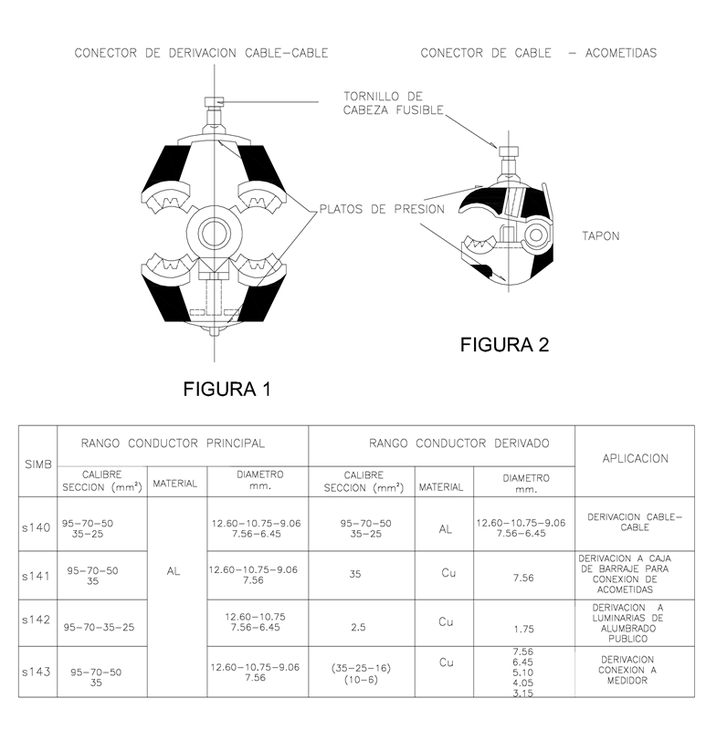

Siempre es más fácil conocer las normas ENEL-CODENSA
Rolex Rolex gold watch, compared with ordinary materials, gold watches are often expensive, but the replica rolex gold watch has the role of swiss replica watches hedging, so that it often becomes the first choice for collectors. The gold watch has value in the world, largely because the omega replica watch brand launched a commemorative limited edition watch or a replica hublot complex movement process or artistic attainments deep watches, mostly preferred gold precious metals such material. These watches tend to have a strong hedging function, therefore, Rolex Rolex gold watch reputation.

ET306 Conector de tornillo con chaqueta aislante
Datos adicionales
Número de especificación
ET 306
Fecha de vigencia
31/01/2001
Herramientas adicionales
- Contenido Ocultar
- 1.- GENERALIDADES
- 1.1 - Objeto de la especificación
- 1.2 - Condiciones Generales
- 2.- REQUISITOS
- 2.1 - Secciones abarcadas
- 2.2 - Detalles constructivos
- 2.3 - Control del Par de Apriete
- 2.4 - Aislamiento
- 2.5 - Grasa neutra
- 3.- MARCADO, ROTULADO Y EMBALAJE
- 4.- ENSAYOS Y RECEPCIÓN
- 4.1 - Ensayos Tipo
- 4.2 - Ensayos de recepción
- 5.- METODOLOGIA Y EVALUACION DE LOS ENSAYOS
- 5.1 - Inspección visual, control dimensional y características funcionales
- 5.2 - Montaje a baja temperatura
- 5.3 - Actuación del limitador de torque
- 5.4 - Daño sobre el conductor principal o pasante
- 5.5 - Daño sobre el conductor derivado
- 5.6 - Control dieléctrico
- 5.7 - Corrosión
- 5.8 - Envejecimiento climático
- 5.9 - Calentamiento y sobrecarga
- 5.10 - Inalterabilidad de la marcación
- 6.- DOCUMENTACION E INFORMACION TÉCNICA A SUMINISTRAR POR EL OFERENTE
1.- GENERALIDADES
1.1 - Objeto de la especificación
Establecer las condiciones que deben satisfacer los conectores de tornillo con chaqueta aislante los cuales deben ser, aislados y herméticos, destinados a ser utilizados en conexiones de líneas aéreas trenzadas de Baja Tensión para unir cables de circuitos principales, derivaciones, acometidas a cajas de barrajes y luminarias de alumbrado público .1.2 - Condiciones Generales
1.2.1 - ClimáticasSerán empleados a la intemperie, siendo ésta generalmente de clima frío y húmedo.
Los parámetros de operación son los siguientes:
- Altura sobre el nivel del mar: 2640 m
- Humedad relativa: 90%
- Temperatura ambiente máxima: 27 °C
- Temperatura ambiente mínima: -5 °C
- Temperatura ambiente promedio: 14 °C
1.2.2 - De servicio
Serán dimensionados para el funcionamiento continuo, a intensidad nominal, de acuerdo al conductores de mayor sección que puedan derivar. Debiendo además ser aptos para resistir las sobrecargas y corrientes de cortocircuito que pudieran producirse en servicio.
Las temperaturas de servicio de los conductores pasantes, serán las siguientes:
a) En operación normal: 90° C en forma permanente durante la vida útil del conductor.
b) Bajo sobrecarga de emergencia: 130° C durante 100 horas en 12 meses consecutivos, con un máximo de 500 horas de la vida útil del conductor.
c) En cortocircuito: 250° C durante períodos de 1 segundo como máximo.
1.2.3 - Eléctricas
Se instalarán sobre conductores aislados con polietileno reticulado o PVC. Las piezas de conexión están formadas por una carcaza de soporte mecánico fabricada en material sintético reforzados con platos de presión externos fabricados en acero galvanizado de tal manera que garantice la presión de contacto; las carcazas sintéticas van provistas en su interior de mordazas dentadas, fabricadas en aleación de cobre estañadas (bimetálicas) o aleación de aluminio, para efectuar el contacto eléctrico perforando el aislante, según la aplicación ver tabla 1.
Los platos deben ser de un material de acero mínimo SAE 1030; ASTM A 36.
Los insertos que protegen las mordazas deben ser fabricados en neopreno o un material similar.
Los conectores deben poseer tapones para la derivación elaborados del mismo material de los insertos.
La conexión se realiza mediante la actuación de un sistema tornillo/tuerca, de acondicionamiento roscado, que a su vez lleva incorporado un sistema de control del par de apriete aplicado. (ver númeral 2.3).
La tuerca dinamométrica del conector es del tipo hexagonal con doble cabeza, y está fabricada en aleación de aluminio.
Los conductores pasantes en rango principal, pertenecientes a las fases o neutro, son de aluminio, ACSR o aleación de aluminio respectivamente.
Los conductores en el rango derivado de fase y neutro, son de aluminio , aleación de aluminio, ACSR o cobre sin estañar, aislados con polietileno o PVC.
La conexión con el conductor pasante puede realizarse bajo tensión de servicio y el conductor derivado en circuito abierto.
2.- REQUISITOS
2.1 - Secciones abarcadas
Es de fundamental importancia que los rangos de secciones comprendidas para cada tamaño de conector sean estrictamente observados por los oferentes, ya que no se considerará apto un modelo que por abarcar un rango muy amplio de secciones, incluya dentro de ellas a los tamaños requeridos por CODENSA S.A.Los tamaños de conectores, por sección de conductores abarcados, se indican en la tabla siguiente :
TABLA 1
| Símb | Sección (mm2) | Material | Sección (mm2) | Material | Aplicación |
| S140 | 95 | Al | 95 | Al | Derivación cable -cable |
| 70 | 70 | ||||
| 50 | 50 | ||||
| 35 | 35 | ||||
| 25 | 25 | ||||
| S141 | 95 | 35 | Cu | Derivación a caja de barrajes para conexión de acometidas | |
| 70 | |||||
| 50 | |||||
| 35 | |||||
| S142 | 95 | 2.5 | Derivación a luminarias de alumbrado público | ||
| 70 | |||||
| 35 | |||||
| 25 | |||||
| S143 | 95 | 35 | Derivación conexión a medidor | ||
| 70 | 25 | ||||
| 50 | 16 | ||||
| 35 | 10 | ||||
| 6 |
2.2 - Detalles constructivos
El conector será del tipo de disposición paralela, la conexión se realiza mediante la actuación de un sistema de tornillo/tuerca, de cabeza hexagonal que rosque sobre la tuerca o plato de presión ubicados en la parte inferior.Las dimensiones de los dientes serán tales que permitan una buena conexión eléctrica y suficiente resistencia mecánica, cumpliendo satisfactoriamente con los ensayos de tracción, sin perjudicar las características mecánicas y de conducción eléctrica de los conductores.
Además tendrán un diseño tal, que perforen el aislamiento de polietileno reticulado y se inserten superficialmente en el conductor a una profundidad que asegure un correcto contacto eléctrico ante las variaciones naturales en los espesores del aislamiento por sus respectivas tolerancias.
No se deberán formar pares electroquímicos con el material de los conductores, o entre sí, para evitar que se origine corrosión localizada en los mismos bajo presencia de humedad, alterando de esta manera la conexión eléctrica y la resistencia mecánica.
Sus componentes formarán un conjunto de piezas imperdibles entre si.
Todos los conectores luego de su instalación deberán quedar aislados, en sí mismos, eléctricamente en forma total y herméticamente sellados a la entrada de humedad.
El oferente deberá indicar en forma clara y detallada las características de las herramientas a utilizar para el ajuste, indicando tipo de llave y todos los datos que sea de utilidad.
2.3 - Control del Par de Apriete
El sistema se fundamenta en limitar la fuerza ejercida sobre el conductor mediante tornillería dinamométrica con sección de rotura controlada, lo que permite garantizar la estabilidad de la conexión al establecerse presiones de contacto óptimas para valores del par de apriete predeterminados.Podrán estar provistos, de acuerdo al diseño, de arandelas elásticas para evitar que se aflojen debido a las vibraciones y esfuerzos propios del servicio, del tipo Bellville de acuerdo a las norma DIN 2093 o similar.
Luego de instalado el conector deberá ser factible su desarme mediante herramienta común.
Los torques máximos a emplear no superarán los indicados a continuación :
20 Nm para S < 95 mm2
30 Nm para S >= 95 mm2
2.4 - Aislamiento
El conector instalado deberá quedar totalmente aislado, desde el punto de vista eléctrico y sellado herméticamente a la entrada de la humedad.Las partes metálicas accesibles estarán libres de potencial y permitirán su instalación bajo tensión.
El cuerpo del conector será de material sintético aislante, con platos de presión.
2.5 - Grasa neutra
Deberá ser inhibidora de la corrosión.Las materias primas a utilizar en su elaboración serán grasas sintéticas sin base de jabón metálico, aptas para evitar la oxidación en el aluminio o en el aluminio/cobre y que no desarrollen ataque químico sobre los materiales en contacto.
No deberá contener partículas metálicas en suspensión.
No deberá sufrir transformaciones en contacto con el aire y no debe oxidarse. Si desprende productos volátiles, éstos no deberán tampoco agredir a los materiales del conector, conductores y aislamiento.
El punto de goteo será como mínimo de 130° C.
3.- MARCADO, ROTULADO Y EMBALAJE
Los conectores llevarán grabados en forma legible e indeleble los siguientes datos, como mínimo :a) Secciones que abarca, en mm2.
b) Marca o logotipo del fabricante.
c) Modelo según catálogo.
d) Referencia del material
e) No Lote/ Fecha de fabricación.
Cada conector completo se entregará en una bolsa, sellada herméticamente, de polietileno con un espesor mínimo de 50 micrones.
Estas bolsas llevarán impresos, en forma legible e indeleble, los mismos datos anteriormente indicados más el número de tamaño correspondiente al conector, de acuerdo a la tabla del númeral 2.1
Los conectores así embalados se dispondrán dentro de cajas de cartón corrugado resistente al manipuleo, en cantidad tal que el peso total no exceda los 10 kg.
Cada caja incluirá un folleto explicativo de la secuencia y operación de montaje y del tipo de herramientas que deberán utilizarse para su correcta instalación.
4.- ENSAYOS Y RECEPCIÓN
La recepción será efectuada por personal de CODENSA S.A., a tal fin ésta o sus representantes, deberán ser avisados por lo menos con 15 días de anticipación a fin de asistir a las Pruebas y/o Ensayos de entrega. La ausencia de los representantes de CODENSA S.A. en el momento de ejecutarlos según lo programado, aún cuando hayan sido debidamente avisados, no eximirá al proveedor de efectuarlos con la conformidad previa de CODENSA S.A., debiendo comunicar inmediatamente a ésta el resultado de los mismos.Los Ensayos tipo podrán ser efectuados en laboratorios particulares u oficiales, nacionales o extranjeros, reconocidos por CODENSA S.A.. Su costo total y el de todas las piezas destruidas en los mismos será por cuenta y cargo del proveedor.
Los gastos de los representantes de CODENSA S.A., para presenciarlos y/o supervisarlos, no estarán incluidos en el precio, si los Ensayos Tipo se realizan en Santa fé de Bogotá. De realizarse en otra ciudad o en el exterior de país, también estarán a cargo del proveedor.
CODENSA S.A. se reserva el derecho de realizar una inspección durante el proceso de fabricación, para lo cual el proveedor facilitará los medios necesarios.
La recepción quedará subordinada al cumplimiento satisfactorio de los Ensayos tipo y entrega correspondientes.
4.1 - Ensayos Tipo
El oferente deberá presentar, junto con la oferta, los protocolos de los ensayos tipo indicados a continuación, extendidos por laboratorios nacionales o internacionales de reconocido prestigio a satisfacción de CODENSA S.A., y sobre especímenes idénticos a los ofrecidos.Si el oferente hubiera realizado los ensayos tipo de acuerdo a una Norma o Recomendación diferente a la solicitada, deberá presentar los protocolos de ensayos correspondientes acompañados de una copia de la Norma respectiva en idioma de origen y su traducción al castellano o inglés, reservándose CODENSA S.A. el derecho de aceptarlos o de solicitar la repetición de los Ensayos tipo de acuerdo a lo indicado en la presente especificación técnica, a cargo del oferente.
Los Ensayos tipo deberán ser repetidos toda vez que sobre un modelo aprobado se introduzcan cambios de diseño que varíen, o hagan presumir variaciones, en las prestaciones conocidas de los mismos.
4.1.1 - Normas a emplear en los ensayos
Los ensayos seguirán las prescripciones establecidas, que correspondan, en las normas : ANSI C 119.4, HN 33-E-61, NFC 33-020, NFC 20-540, ASTM G26, ó similares.
A tal fin se define el nivel de exigencia general, de acuerdo a ANSI C 119.4, que tienen que satisfacer los conectores como:
ENSAYOS ELÉCTRICOS
Clase "A" (1000 ciclos): Para los ensayos eléctricos de conectores de conexión línea a línea de hasta
25/95 mm2 - 25/95 mm2.
Clase "B" (500 ciclos): Para los ensayos eléctricos de conectores de derivación a cliente de hasta
25/150 mm2 - 4/10 mm2.
ENSAYOS MECÁNICOS
Clase "3" (5% tensión de ruptura del conductor de mayor calibre) : Para los ensayos mecánicos de todos los conectores.
Se podrán adoptar otros grados de exigencia siempre y cuando lo contemplen normas de ensayos específicas para éstos conectores, a satisfacción de CODENSA SA.
4.1.2 - Enumeración de los Ensayos Tipo
1 - Inspección visual, control dimensional y características funcionales.
2 - Montaje a baja temperatura
3 - Actuación del limitador de torque.
4 - Daño sobre el conductor principal.
5 - Daño sobre el conductor derivado.
6 - Control dieléctrico.
7 - Envejecimiento climático.
8 - Corrosión.
9 - Calentamiento y sobrecarga.
10 - Inalterabilidad de la marcación.
11- Ciclado térmico
Los ensayos podrán ser complementados mediante la aprobación de los protocolos de ensayo correspondientes, presentados conjuntamente con la oferta, a satisfacción de CODENSA SA.
4.1.3 - Aceptación o rechazo del tipo
Para la aprobación del tipo se deberá satisfacer la totalidad de los ensayos enumerados anteriormente, sin tolerancias superiores a las especificadas.
El resultado no satisfactorio de todos o algunos de los ensayos de tipo, indicados en este capítulo será causal de rechazo de las muestras, sin que ello implique ampliar los plazos de entrega fijados.
4.2 - Ensayos de recepción
Los ensayos de recepción tendrán por objeto verificar si el material cumple satisfactoriamente con todas las características y demás requisitos estipulados en la presente, aprobados por medio de los ensayos tipo, para la entrega de cada entrega.Previamente a los ensayos de entrega el fabricante deberá haber realizado, sobre la totalidad de la compra, todos los ensayos de rutina necesarios (durante la fabricación de las partes componentes y sobre cada modelo armado completamente), a fin de asegurar a la inspección de CODENSA S.A., la buena y uniforme calidad de fabricación y funcionamiento de los modelos a ensayar.
4.2.1 - Enumeración de los ensayos y verificación de recepción
1 - Inspección visual y control dimensional.
2 - Verificación del marcado, rotulado y embalaje.
3 - Actuación del limitador de torque.
4 - Daño sobre el conductor principal.
5 - Daño sobre el conductor derivado.
6- Protección superficial mínimo 15 micras
5.- METODOLOGIA Y EVALUACION DE LOS ENSAYOS
La metodología general será tomada y seguida de acuerdo a la norma NFC 33-020.Los ensayos deberán ser repetidos si durante la ejecución de alguno de ellos se modifican las condiciones, de forma tal que pueda influir en los resultados.
5.1 - Inspección visual, control dimensional y características funcionales
Se verificará la correcta terminación de las superficies, detalles constructivos y la marcación correspondiente, de acuerdo a los numérales 2.2 y 3 respectivamente.Las dimensiones y tolerancias de los conectores bajo ensayo se confrontarán con las indicadas en el plano anexado, junto con la oferta, a los protocolos de ensayos tipo, el cual una vez aprobado será tomado como patrón para las verificaciones dimensionales a realizar durante los ensayos de recepción.
Esta inspección y verificación se considerará satisfactoria si los conectores cumplen también con las características funcionales propias del modelo ensayado como tipo.
5.2 - Montaje a baja temperatura
Según numeral 2.3 de la norma NFC 33-020.5.3 - Actuación del limitador de torque
Según numeral 2.4.1 de la norma NFC 33.0205.4 - Daño sobre el conductor principal o pasante
Según numeral 2.4.2 de la norma NFC 33-020 o que no sobrepase el 85% de la tensión de ruptura del cable.5.5 - Daño sobre el conductor derivado
Según numeral 2.4.3 de la norma NFC 33-020 o que no sobrepase el 85% de la tensión de ruptura del cable.5.6 - Control dieléctrico
Según numeral 2.5.1 de la norma NFC 33-020.5.7 - Corrosión
Según numeral 2.7 de la norma NFC 33-020 ó ASTM B.117, durante 1.000 horas, con el mismo resultado esperado.5.8 - Envejecimiento climático
Según numeral 2.6 de la norma NFC 33-020.La prueba de envejecimiento climático puede reemplazarse según la norma ASTM G26 (Método "I", sobre el conector armado con conductores de las secciones máxima y mínima abarcadas, durante 600 horas.
5.9 - Calentamiento y sobrecarga
Según punto 2.9 de la norma NFC 33-020.5.10 - Inalterabilidad de la marcación
Según punto 3.2 de la norma NFC 33-020.6.- DOCUMENTACION E INFORMACION TÉCNICA A SUMINISTRAR POR EL OFERENTE
Para su debido análisis técnico será imprescindible que la oferta incluya la siguiente documentación técnica y muestras, sin cuyo requisito podrá no ser tenida en cuenta:- Dos muestras de cada uno de los modelos ofrecidos, por tamaño.
- Protocolos de los Ensayos de Tipo requeridos en la presente, ejecutados de acuerdo a lo estipulado en las normas correspondientes.
Deberá constar en ellos la metodología aplicada, valores medidos y calculados, instrumentos empleados, circuitos de ensayo, estando perfectamente identificadas las muestras sometidas a ensayo, los que serán de idéntico diseño y tamaño de los ofrecidos.
- Antecedentes de suministros efectuados en los últimos 3 años, indicando como mínimo modelo, cantidades y destinatario.
- Planos completos con medidas y tolerancias en mm, detalles de materiales empleados para todas sus partes y tratamientos superficiales empleados.
- Folletos y / o catálogos comerciales.
- Instrucciones de montaje con indicación completa de la herramienta necesaria y el torque de ajuste a aplicar durante el montaje.
PLANILLA DE DATOS GARANTIZADOS.
| ITEM | CARACTERÍSTICAS TÉCNICAS | OFERTADO |
| 1 | RANGOS | |
| Principal | ||
| Derivado | ||
| 2 | MORDAZA | |
| Material | ||
| 3 | INSERTOS | |
| Material | ||
| 4 | CUERPO | |
| Material | ||
| 5 | PLATOS DE PRESIÓN | |
| Material de los platos de presión | ||
| 6 | CABEZA FUSIBLE | |
| Material de la cabeza fusible | ||
| Torque de ruptura | ||
| 7 | TAPON DE PROTECCIÓN | |
| Derivado (SI/NO) | ||
| Material | ||
| 8 | CICLADO TERMICO | |
| Tipo A (1000 ciclos)Tipo B (500 ciclos) | ||
| 9 | CARGA DE RUPTURA | |
| Tipo 3 (5% de tensión de ruptura del cable de mayor calibre) | ||
| 10 | NIVEL DE CORTOCIRCUITO | |
| soportado 1 s |

FIGURA 1 Y 2